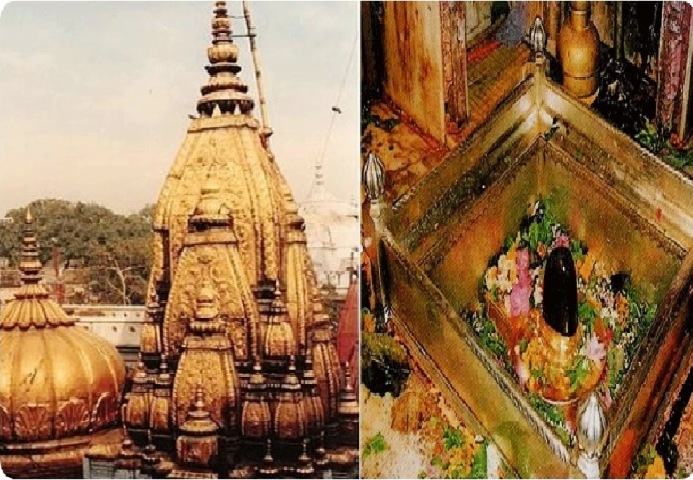
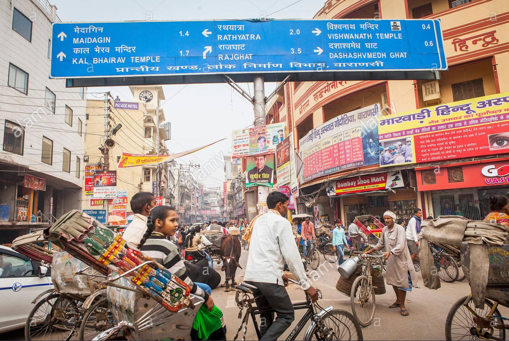
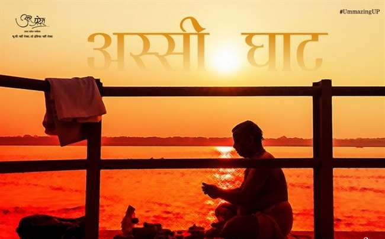
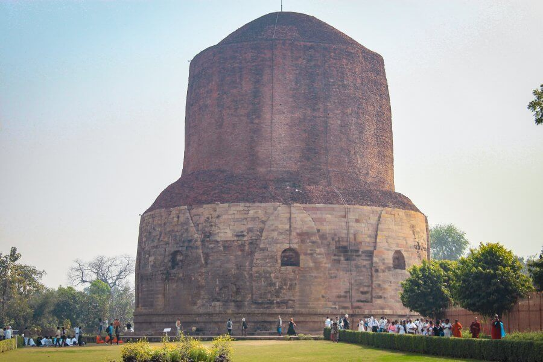
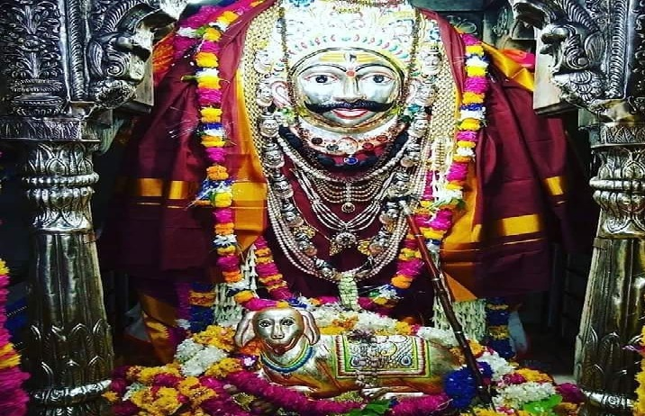
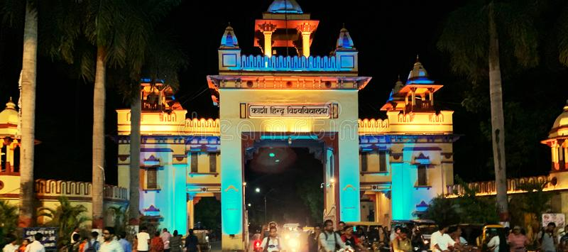

Assi Ghat is the southernmost ghat in Varanasi. To most visitors to Varanasi, it is known for being a place where long-term foreign students, researchers, and tourists live. Assi Ghat is one of the ghats often visited for recreation and during festivals. On typical days about 300 people visit every hour in the mornings, and on festival days 2500 people arrive per hour. Most of the people visiting the ghat on usual days are students from the nearby Banaras Hindu University. The ghat accommodates about 22,500 people at once during festivals like Shivratri.


Ghats: A place to know the self and acknowledge the true meaning of life..
2 minutes

Streets: A way of exploring the self...
2 minutesFood: Delicious sweets,snacks like malaio,tamatarchat,kachodi...
2 minutes
Forts: Insight of the brave rulers and their cultures...
2 minutes

February 21, 2021
2 Commets
Asssi Ghat:

Admin
January 16, 2021
7 Commets
Sarnath Stupa
Sarnath is a place located 10 kilometres north-east of Varanasi near the confluence of the Ganges and the Varuna rivers in Uttar Pradesh, India. The Deer Park in Sarnath is where Gautama Buddha first taught the Dharma, and where the Buddhist Sangha came into existence through the enlightenment of Kondanna.

Admin
February 19, 2021
5 Commets
Baba Kaal Bhairav
Kaal Bhairav Mandir (Hindi: काल à¤à¥ˆà¤°à¤µ मंदिर) is one of the oldest Shiva temples in Varanasi, India. Situated in Bharonath, Vishweshwarganj (Varanasi), this temple has great historical and cultural importance in Hinduism; especially amongst the locals. The temple is dedicated to Bhairava (Kaal Bhairav), a fierce form of Shiva and wears a garland of skulls and carries a club of peacock feathers. The word "Kaal" means both "death" and "fate". It is believed that even death is afraid of Kaal Bhairav.

Manish Yadav
February 21, 2021
12 Commets
Banaras Hindu University(BHU)
Banaras Hindu University (Hindi: [kaʃi hind̪u viʃvəvid̪yaləy], BHU), formerly Central Hindu College, is a public central university located in Varanasi, Uttar Pradesh. It was established jointly in 1916 by the Maharaja of Darbhanga Rameshwar Singh, Madan Mohan Malaviya, Sunder Lal and British Theosophist and Home Rule League founder Annie Besant. With over 30,000 students residing on campus, it is the largest residential university in Asia.